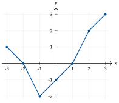

Automatismes N09 — Fonctions : images, antécédents et registres
24 questions sans calculatrice, réparties en 4 séries courtes à faire en quelques minutes. Chercher d'abord seul, puis ouvrir le corrigé.
Série A — Réactivation : images et antécédents
Consigne. Répondre rapidement. Préciser image ou antécédent.
- Pour \(f(x)=2x-3\), calculer \(f(4)\).
- Pour \(f(x)=2x-3\), déterminer l’antécédent de \(5\).
- Si \(g(3)=0\), quelle est l’image de \(3\) par \(g\) ?
- Pour \(h(x)=x^2+2x\), calculer \(h(-1)\).
- Résoudre \(x+2=0\).
- Donner l’ensemble de définition de \(k(x)=\dfrac{1}{x-4}\).
Coup de pouce
Conseils
- Identifier la forme avant de calculer.
- Écrire seulement les étapes utiles.
- Contrôler le signe et les unités.
Vigilance
- Image : on remplace \(x\).
- Antécédent : on résout une équation.
- Un dénominateur ne doit pas être nul.
Corrigé de la série A
- \(f(4)=\)
\(2\times4-3=\) \(\boxed{5}\). - \(2x-3=\)
\(5\Rightarrow 2x=\) \(8\Rightarrow \boxed{x=4}\). - \(\boxed{0}\).
- \(h(-1)=1-2=\boxed{-1}\).
- \(\boxed{x=-2}\).
- \(\boxed{\mathbb{R}\setminus\{4\}}\).
Méthode. Image et antécédent ne se lisent pas dans le même sens : l'image part de \(x\), l'antécédent part d'une valeur de \(f(x)\).
Vigilance. La valeur interdite vient toujours de l'annulation du dénominateur.
Série B — Registres : tableau, formule, programme
Consigne. Passer d’un registre à l’autre.
- Compléter : pour \(f(x)=x^2-1\), \(f(-2)=\ldots\), \(f(0)=\ldots\), \(f(3)=\ldots\).
- Dans le tableau \(x:-1;0;2\) et \(f(x):4;1;-5\), donner l’image de \(2\).
- Dans ce même tableau, donner un antécédent de \(1\).
- Un programme multiplie le nombre par \(3\), puis soustrait \(4\). Donner \(f(x)\).
- Si \(f(2)=7\), quel point appartient à la courbe de \(f\) ?
- Le point \((1\,;\,0)\) appartient à \(\mathcal C_f\). Traduire avec \(f\).
Coup de pouce
Conseils
- Tableau : première ligne pour \(x\), deuxième pour \(f(x)\).
- Courbe : un point \((a;b)\) signifie \(f(a)=b\).
- Programme : écrire les opérations dans l'ordre.
Vigilance
- Ne pas inverser abscisse et ordonnée.
- Un antécédent n'est pas forcément unique.
Corrigé de la série B
- \(f(-2)=3\), \(f(0)=-1\), \(f(3)=8\). \(\boxed{3\,;\,-1\,;\,8}\)
- \(\boxed{-5}\).
- \(\boxed{0}\).
- \(\boxed{f(x)=3x-4}\).
- \(\boxed{(2\,;\,7)}\).
- \(\boxed{f(1)=0}\).
Méthode. Chaque registre donne la même information sous une forme différente : phrase, tableau, formule, courbe ou programme.
Vigilance. Un point de la courbe se lit toujours \((x\,;\,f(x))\).
Série C — Lecture graphique
Consigne. Utiliser le graphique de la fonction \(f\) ci-dessous.

- Lire \(f(2)\).
- Donner les antécédents de \(0\) visibles sur le graphique.
- Donner la plus petite valeur atteinte sur l’intervalle représenté.
- Donner la plus grande valeur atteinte sur l’intervalle représenté.
- Vrai ou faux : \(f(0)=0\).
Coup de pouce
Conseils
- Image : partir de l'axe horizontal puis lire l'ordonnée.
- Antécédent : partir de l'axe vertical puis lire l'abscisse.
- Maximum/minimum : chercher les hauteurs extrêmes.
Vigilance
- Lire sur les axes, pas « à l'œil ».
- Plusieurs antécédents sont possibles.
Corrigé de la série C
- Le graphique représente la fonction \(f\) sur l'intervalle affiché.
- \(\boxed{f(2)=2}\).
- \(\boxed{-2\text{ et }1}\).
- \(\boxed{-2}\).
- \(\boxed{3}\).
- \(\boxed{\text{faux}}\), car \(f(0)=-1\).
Méthode. Une lecture graphique doit toujours préciser si l'on cherche une abscisse ou une ordonnée.
Vigilance. Le point \((0\,;\,-1)\) indique \(f(0)=-1\), pas \(f(0)=0\).
Série D — Type épreuve anticipée : QCM
Consigne. Choisir une seule réponse. Aucune justification n’est demandée.
- Si \(f(3)=7\), alors la courbe de \(f\) passe par :
- \((7\,;\,3)\)
- \((3\,;\,7)\)
- \((3\,;\,0)\)
- \((0\,;\,7)\)
- Pour \(h(x)=x^2\), les antécédents de \(9\) sont :
- \(3\)
- \(-3\)
- \(-3\) et \(3\)
- \(81\)
- L'ensemble de définition de \(k(x)=\dfrac{1}{x+2}\) est :
- \(\mathbb R\)
- \(\mathbb R\setminus\{2\}\)
- \(\mathbb R\setminus\{-2\}\)
- \(\{ -2\}\)
- Pour \(f(x)=-2x+5\), l'image de \(-1\) est :
- \(3\)
- \(-7\)
- \(7\)
- \(-3\)
- Dans le tableau \(x:0;1;2\), \(f(x):3;5;7\), un antécédent de \(5\) est :
- \(0\)
- \(1\)
- \(2\)
- \(7\)
- « Ajouter \(2\), puis élever au carré » correspond à :
- \(x^2+2\)
- \(x+4\)
- \((x+2)^2\)
- \(2x^2\)
Coup de pouce
Conseils
- Repérer si la question demande une image ou un antécédent.
- Vérifier les valeurs interdites.
- Pour un programme, conserver l'ordre des opérations.
Vigilance
- \(x^2=9\) a deux solutions.
- \((x+2)^2\neq x^2+2\).
Corrigé de la série D
- Réponse B : .
- Réponse C : .
- Réponse C : .
- Réponse C : .
- Réponse B : .
- Réponse C : .
Méthode. Un QCM de fonctions se traite souvent en traduisant d'abord l'énoncé en notation mathématique.
Vigilance. Attention aux carrés : deux nombres opposés peuvent avoir la même image.
Ces questions reprennent le diaporama d'automatismes N09 utilisé en classe. Licence CC BY-NC-SA 4.0 : réutilisation libre en classe, en citant la source.